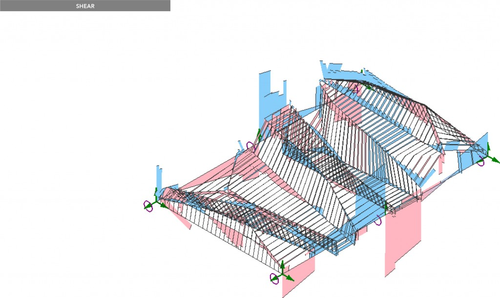

Data informed structures
MushroomsAlternativeVersion from Eduardo Chamorro Martin on Vimeo.
The Magic Carpet is a project created in the Institute for Advanced Architecutre of Catalonia, during the two-term seminar Mushrooms: The structural collective of a specific environment, led by Manja Van de Worp. It was developed by twenty six students of the Master in Advanced Architecture, along with IAAC faculty Raimund Krenmüller and student assistant Cesar Arroyo. During the first term of the seminar, the students were divided in six groups, and were emerged into Structural Design and Analysis through seminars of Karamba and a design competition for a wooden structure, placed in the IAAC facilities. The winning proposal of the competition, the Magic Carpet, was further analyzed and fabricated in scale 1:1 during the second term. During that term, the students were divided in six new groups, each focusing on a different aspect of the final structure (Design, Global Structural Analysis, Global Structural Physical Model, 1:1 Fabrication, Connection to Existing Structure and Documentation-Installation).


The Magic Carpet, is composed out of wooden cross sections that create folded surfaces, which can be used as sitting, lounging or working spaces. The idea behind the structural design is that the final 3D surface model should not be able to be unfolded, making it self-lock in place. The design also focuses on the ergonomics making sure that an angle between 90 and 160 degrees is maintained to increase the user's comfort, whilst keeping in mind that the steeper the slope, the less it unfolds, thus the sturdier the structure. What makes it really interesting, is the fact that geometrically/morphologically it spans along one axis, where as structurally it spans along the other. Initially, the structure was going to be installed in the IAAC facilities as a new lounge space between two existing bridges. Later, it was decided to turn the Magic Carpet into a mobile structure, let it fly and give the public space a new identity, allowing the users of the city of Barcelona to interact with it and seize their own space in the diverse forms it offers.
Study of Shear - Adding a curved cable decreases the deformation by 25%. Karamba diagrams were used to define the location and size of the steel rods.
Due to the complexity of the design, there were some specific locations of the structure that were considered as "special cases", for which unique joinery had to be designed. The diagrams below show the position of these cases and the details designed for them.


Project developed by Eduardo Chamorro Martin Elliot Santos, Ipsita Datta, Milivoje Momcilovic, Shruti Jalodia, Yuchen Chen, Sabrina Naumovski, Ozge Tektas, Timothy Magara, Mario Alberto Espinoza Membreño, Mohammad Amin Ziaie Bigdeli, Yi Fan Liao, Umit Ceren Bayazitoglu, Nikoleta Mougkasi, Lars Erik Elseth, Anuj Mittal, Stephie Moukarzel, Ogulcan Unesi, Cansu Cetin, Madhurya Bayyapuneedi, Hari Krishna Gundu, Johan Jasser Salas Castro, Anna Piliugina, Luciana Maia Teodózio, Adriana Kano Limarino, Mohamed Ifthikar Noordeen
Return to portfolio >